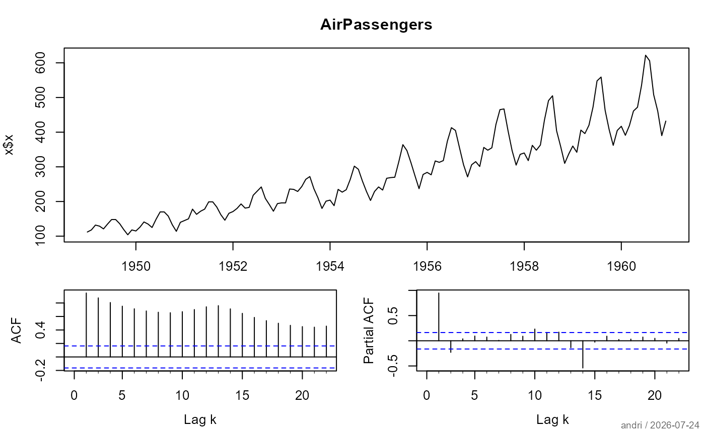
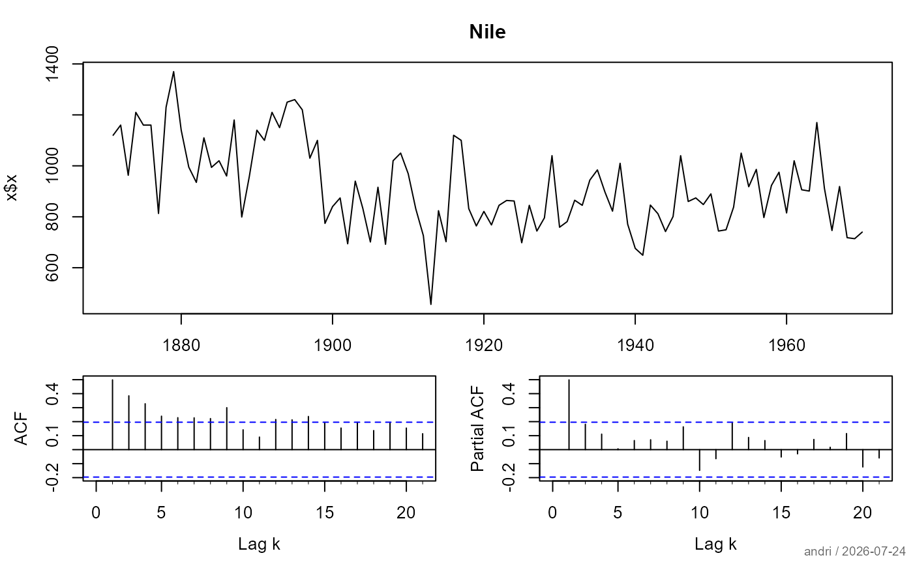

Provides a compact diagnostic summary for univariate ts objects,
extending classical descriptive statistics with key time series diagnostics.
a univariate object of class "ts"
number of lags used in the Ljung-Box test; defaults to 12
character string, NULL, or NA, defining the main
title. By default (main = NULL) the title will
be composed as: NA, no title is printed.
logical. Should a plot be created? The plot type depends
on the classes of the variables. Default can be defined by
the option plotit, if it does not exist then it's set to TRUE.
integer controlling verbosity of table output.
One of 1 (minimal), 2 (default), 3 (extensive).
Applies to tables only.
further arguments passed to methods
number of digits used to format numeric values
an object of class c("Desc.ts", "Desc") containing the
computed statistics
The function reports:
Lag-1 autocorrelation
Ljung-Box test for overall autocorrelation
Augmented Dickey-Fuller (ADF) test
KPSS test
Linear trend estimation (slope and p-value)
Suggested Box-Cox transformation parameter
The goal is to provide quick diagnostic guidance before model fitting (e.g., ARIMA specification).
Stationarity is evaluated using both the Augmented Dickey-Fuller (ADF) and KPSS tests. A combined decision rule is used: the series is considered stationary if the ADF test rejects the null hypothesis of a unit root (p < 0.05) and the KPSS test does not reject the null hypothesis of stationarity (p > 0.05).
The Box-Cox transformation parameter is estimated using
boxCoxLambda().
Box, G. E. P., Jenkins, G. M., Reinsel, G. C., & Ljung, G. M. (2015). Time Series Analysis: Forecasting and Control.
Hyndman, R. J., & Athanasopoulos, G. (2021). Forecasting: Principles and Practice.
desc(AirPassengers)
#> Warning: p-value smaller than reported p-value
#> ──────────────────────────────────────────────────────────────────────────────
#> AirPassengers (ts)
#>
#> Warning: number of columns of result is not a multiple of vector length (arg 1)
#> start end frequency
#> 144 118 0 144 118
#>
#>
#> start end frequency
#> 1949-1 1960-12 12
#>

desc(Nile, maxLag = 10)
#> Warning: p-value smaller than reported p-value
#> ──────────────────────────────────────────────────────────────────────────────
#> Nile (ts)
#>
#> Warning: number of columns of result is not a multiple of vector length (arg 1)
#> start end frequency
#> 100 85 0 100 85
#>
#>
#> start end frequency
#> 1871-1 1970-1 1
#>
